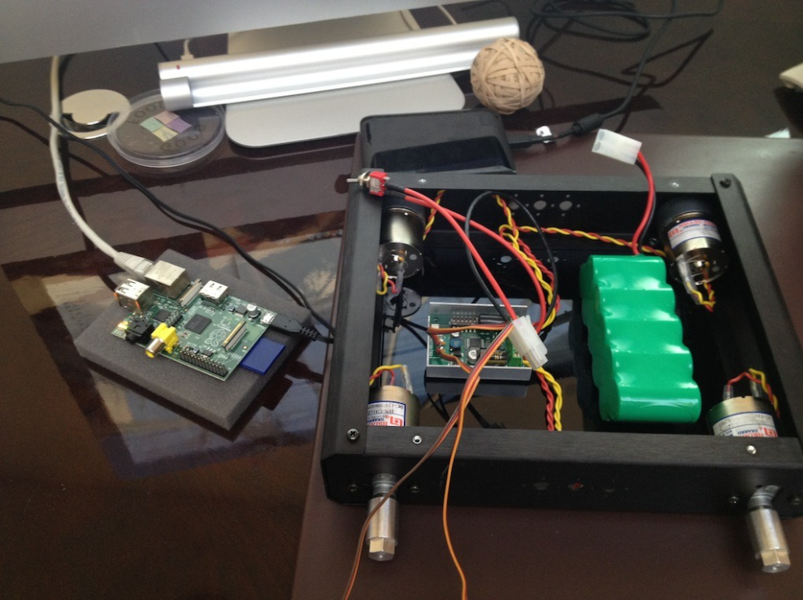
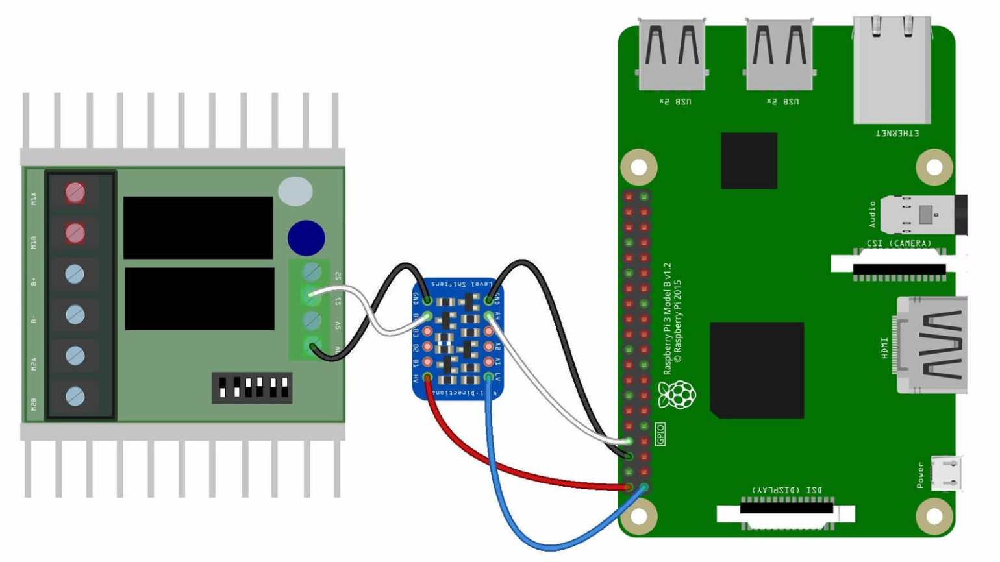
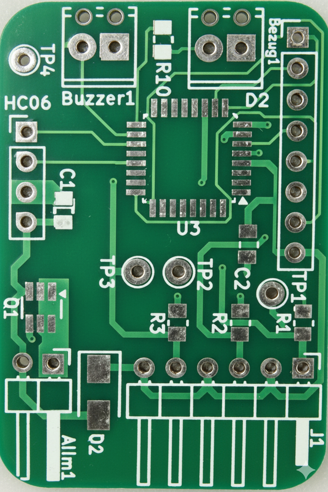
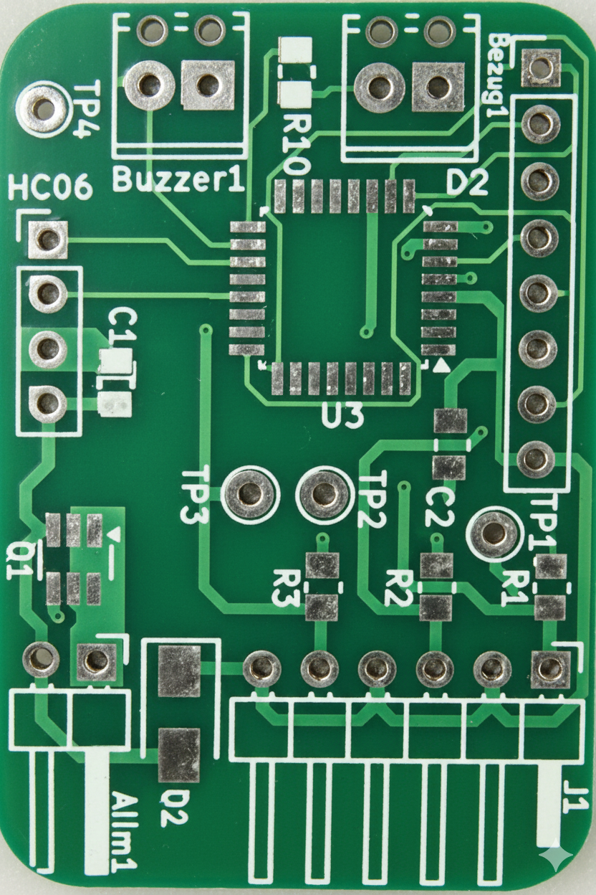
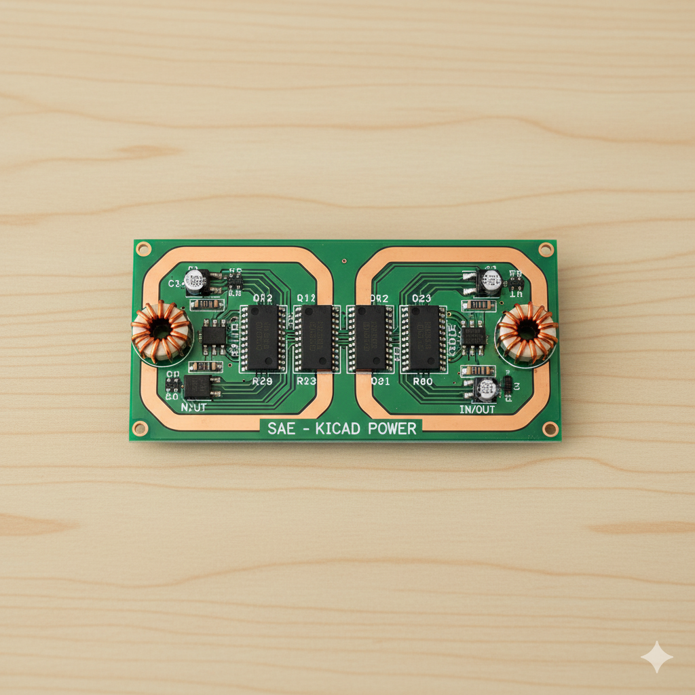

Projets techniques
Rover Télécommandé Haute Précision
SAE — Raspberry Pi — C++
Conception complète d’un système embarqué pour un rover télécommandé, incluant la gestion logicielle, matérielle et la communication temps réel.
- Programmation C++ : optimisation des performances sur Raspberry Pi.
- Vision & communication : streaming vidéo temps réel (<100 ms).
- Asservissement : contrôle précis des moteurs (±2 cm).


En savoir plus →
Plastron de Taekwondo Connecté
PTUT — STM32 — Électronique & Qt
Conception d'un système embarqué complet pour la détection d'impacts en temps réel, de la capture de force jusqu'à l'affichage du score sur interface logicielle.
- Conception Électronique : Réalisation du schéma électrique et du routage PCB pour l'intégration de capteurs de force (FSR).
- Système Embarqué : Programmation sur microcontrôleur STM32 pour le traitement des signaux ADC et la communication Bluetooth (HC-06).
- Interface Logicielle : Développement d'une application de monitoring sous Qt (C++) pour la réception et le décodage des trames de données.
 

Conception de Carte de Puissance
SAE — KiCad
Conception complète d’une carte électronique de puissance, du schéma au routage PCB.
- Choix composants (MOSFETs, drivers)
- Routage fortes intensités & plans de masse
- Validation règles CEM

En savoir plus →